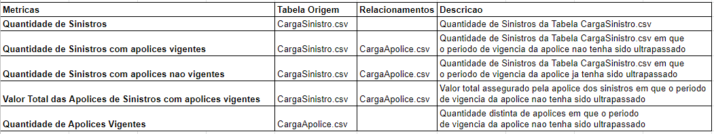
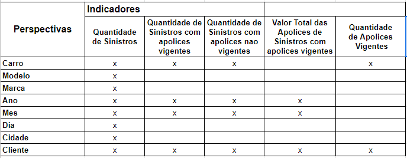
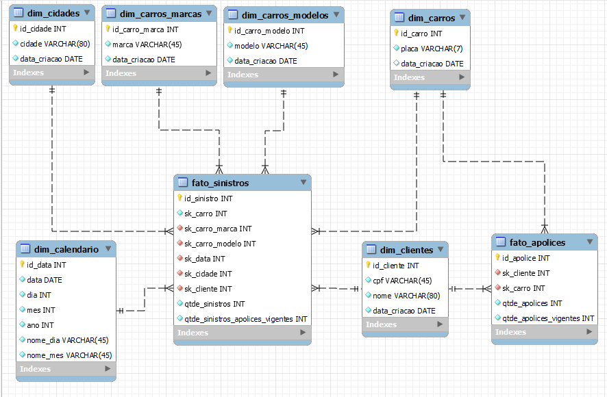
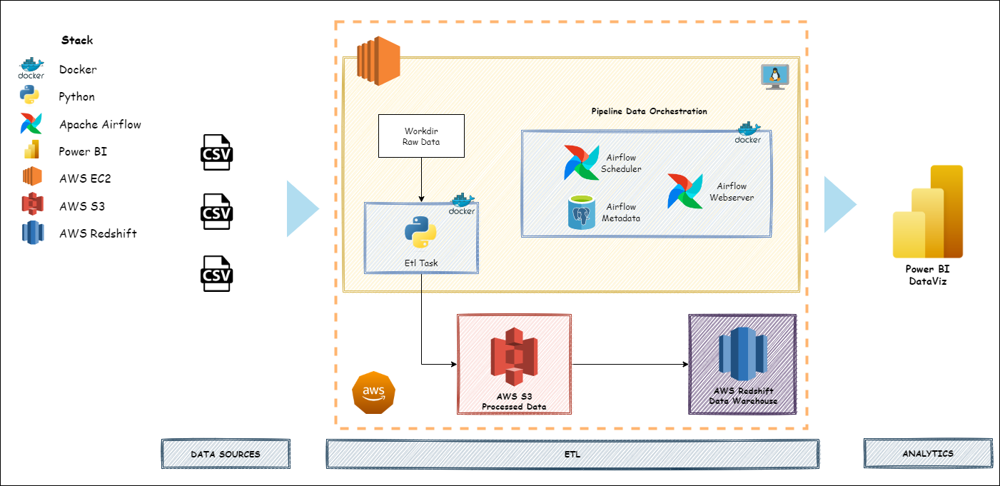
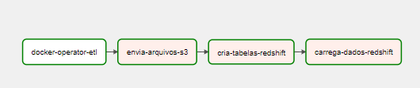
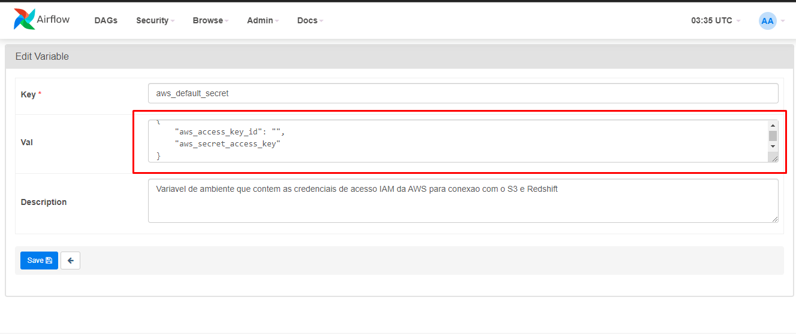
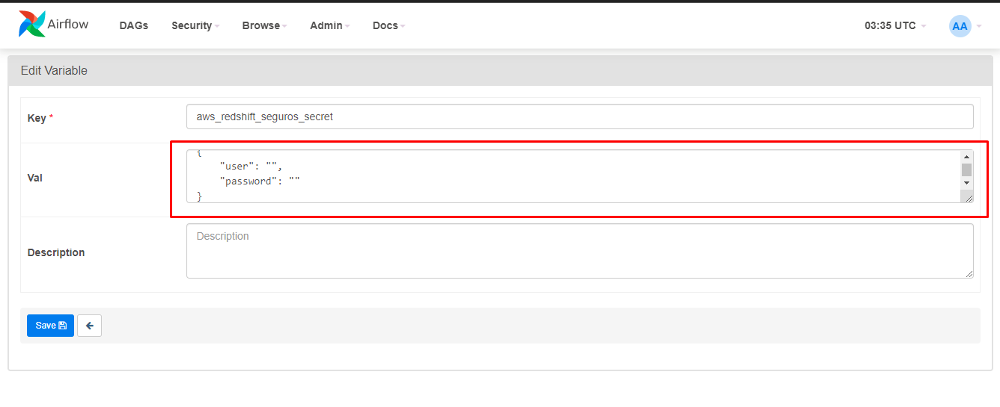

Banco de Dados Dimensional
Projeto pratico em modo de desafio com a criacao de um banco de dados dimensional desenvolvido como atividade avaliativa do Bootcamp Engenheiro de Dados da XPEducacao.
Estrutura do Projeto
├─ dags: pasta de dags do Apache Airflow
├─ data: pasta auxiliar para armazenamento de dados durante a execucao das dags
├─ docs: pasta de documentacao do mkdocs
│ └─ media
│ └─ index.md: pagina inicial da documentacao do projeto
├─ logs: pasta de logs do Apache Airflow
├─ notebooks: jupyter notebook com a analise exploratoria dos dados
├─ plugins: plugin do Apache Airflow
├─ mkdocs.yaml: arquivo de configuracao do mkdocs
├─ README.md
├─ requirements.txt: bibliotecas requeridas para rodar o projeto
├─ docker-compose: arquivo para realizar o build dos containers docker do projeto
Objetivo do Projeto
O modelo dimensional foi criado a partir das metricas propostas pelo desafio.
Visando tornar o projeto mais robusto, criou-se um pipeline de dados orquestrado pelo Apache Airflow que recupera os dados em formato .csv, realiza os procedimentos de transformacao e compatibilizacao dos dados com o modelo dimensional desenhado.
Os dados modelados sao colocados em um bucket da AWS S3 e, por fim, os dados sao armazenados em um cluster na AWS Redshift.
Os dados do Redshift sao consumidos pelo Power BI, onde sera criado um dashboard de acordo com as metricas e necessidades de negocio levantadas.
Levantamento de Requisitos
Empresa de Seguros de Automoveis
- Cada cliente possui CPF, nome, sexo, endereço e telefones de contato (celular e fixo), mas podem vir a ter outros telefones no futuro.
- Os carros possuem uma placa, marca, modelo, ano, chassi e cor. Cada carro tem determinado número de sinistros de acidentes associados a ele, sabendo que pode ter ocorrido múltiplos acidentes ou nenhum.
- Já os sinistros devem ser identificados por um código único, data de ocorrência, hora de ocorrência, local de ocorrência (Endereço completo) e condutor, que pode ou não ser o titular da apólice e precisa ser devidamente registrado no sistema. Além disso, o sinistro possui um tipo de ocorrência (Colisão, Roubo ou Furto, Incêndio, Enchente, Retrovisor, dentre outros).
- Um cliente ou pessoa pode ter várias apólices (mínimo uma) vigentes ou nenhuma, e cada apólice de seguro tem um identificador único e só pertence a um cliente e a somente um carro, mas pode ter vários condutores vinculados, e tem data de início e fim da vigência, valor total assegurado e valor franquia associados a ela.
- É importante saber que o carro pode ter várias apólices vinculadas a ele, mas apenas uma vigente.
- E sempre que houver um sinistro é preciso saber qual o carro envolvido, além do número da apólice, uma vez que este precisa ser assegurado por uma apólice. Mesmo que o atendimento seja para terceiros vai ser registrado no sinistro do carro vinculado à apólice da empresa em questão.
Levantamento de Metricas
O quadro abaixo contem todas as metricas que irao responder as questoes de negocio definidas pela empresa.

Bus Matrix
O quadro abaixo estabelece uma definicao dos grupos de dimensoes e fatos que devem estar no modelo de dados do projeto.

Modelo Multidimensional do Data Mart

Stack Tecnologica
Apache Airflow 2.0
AWS Redshift
AWS S3
Docker 20.10.17
Python 3.10.7
Power BI
Decisoes Arquiteturais do Projeto
O Apache Airflow e o orquestrador de pipelines mais utilizado do mercado, personalizavel e permite a escalabilidade do projeto com a possibilidade de processamento distribuido.
O AWS Redshift foi escolhido por ser uma solucao totalmente gerenciada e permitir consumir os dados
diretamento do AWS S3. Alem disso, o banco e otimizado para solucoes de DW.
O AWS S3 e muito utilizado no mercado pela sua flexibilidade e a possibilidade de consumo dos dados
em seu formato nativo. Alem disso e possivel separar o projeto em uma estrutura de pastas que auxilia o
armazenamentos dos dados em todos os estagios do pipeline.
O Docker permite uma maior compatibilidade e flexibilidade no ambiente de execucao do projeto. Alem disso
pode ser implementado nao apenas em servidores como tambem em solucoes serverless disponiveis em todas as
plataformas de cloud.
O Power BI foi escolhido por ser uma das solucoes de dataviz mais utilizadas pelo mercado, ser capaz de lidar
com grandes quantidades de dados e possuir diversos recursos para analise de dados.

Pipeline de Dados Apache Airflow

1. Task docker-operator-etl: task responsavel por executar todas as transformacoes nos dados de acordo com o modelo dimensional pre-definido. A task foi isolada em um container docker para facilitar a compatibilidades com as dependencias necessarias para execucao. Os detalhes das transformacoes podem ser encontrados aqui: julioszeferino/docker-operator-etl.
2. Task envia-arquivos-s3: task responsavel por armazenar os aarquivos no bucket criado no s3.
3. Task cria-tabelas-redshift: task responsavel por estruturar o data warehouse no redshift.
4. Task carrega-dados-redshift: task responsavel por recuperar os dados do s3 e armazenar no cluster redshift do DW.
Como Executar este Projeto
- Crie uma instancia no
AWS EC2ou outro provedor da sua escolha, realize o download deste repositorio e execute o docker-compose para realizar o build dos containers:
docker-compose up -d
- Criar um bucket no
AWS S3com o nome etl-seguros. - No painel web do
Apache Airflowcadastrar a variavel aws_default_secret com os dados de acesso da sua conta aws:
{
"aws_access_key_id": "",
"aws_secret_access_key"
}
- Crie um database chamado seguros dentro de cluster na
AWS Redshift. No painel web doApache Airflowcadastrar a variavel aws_redshift_seguros_secret com os dados de acesso ao banco:
{
"user": "",
"password": ""
}
- Realizar o pull da imagem docker responsavel por realizar o processo de ETL nos dados
$ docker pull julioszeferino/docker-operator-etl
- Executar o pipeline de dados no
Apache Airflow - Configurar e criar as visualizacoes no
Power BI
Configuracao das Variaveis no Apache Airflow
A configuracao das variaveis de acesso a aws e ao redshift devem ser feitas na interface web do Apache Airflow que por padrao estara disponivel no endereco http://localhost:8080. Acesse a aba Admin>Variables:

